Did you ever thought about how memories become the 'Memories'?
Did you ever thought about the process occuring in your unconsciousness when you recalling your memories?
In daily lives, we often look back on our childhood. There are lots of documents such as diaries and photos which helps you to recall those memories.
And these documents helps us to feel nostelgia by bringing the memories that almost dimmed or already forgotten.
However on second thought, keeping a record of memories with writing something and taking pictures
which we do during the whole life might be seen as something artificial action
since the memories that passing into silence is very normal and natural phenomenon.
And whenever we try to recall the memories, the things in your brain changes somehow when it became particular 'words'.
For those reasons, I became curious how we remember and recall the things that we experienced. And it brings me to have an attention to the process of recalling memories.
'Between Your Memories' is inspired by a comic book
This is an approach to the memories that stored in our unconscious mind. The website works as a virtual memorial space, and visualized memories are stored. It operates on the z-axis based on scrolloing, and viewers can look into the memory that have been modified several times.

 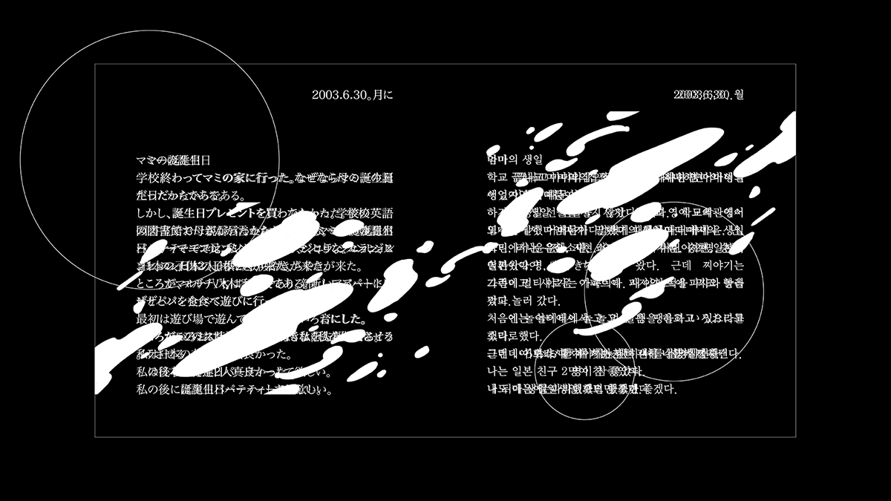
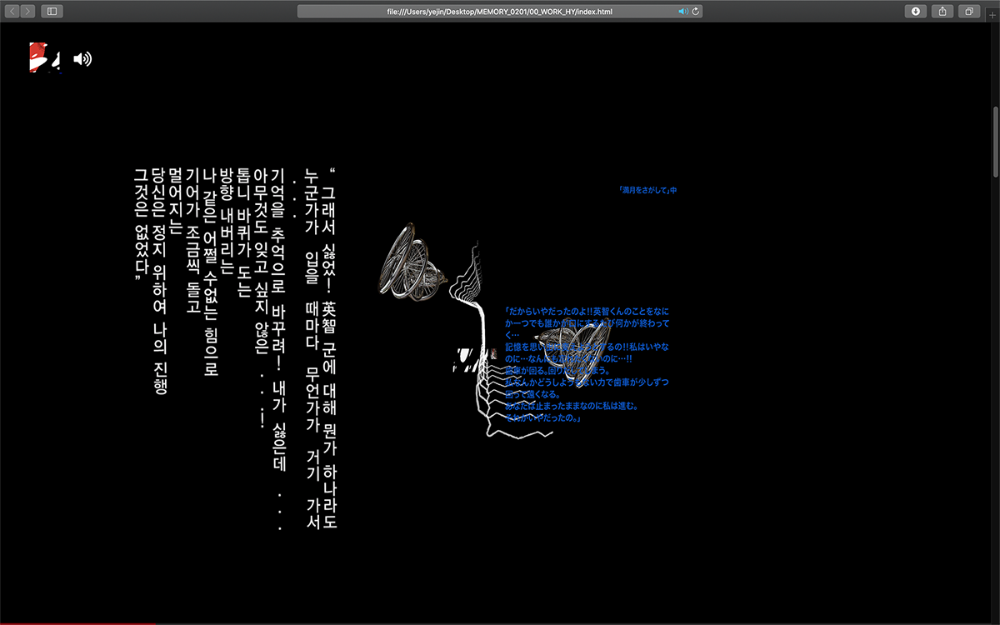
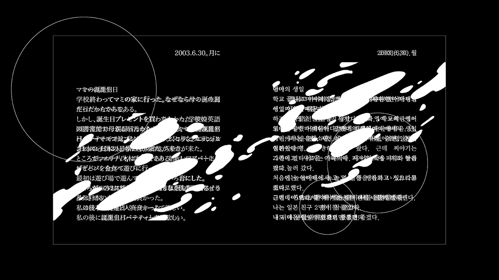
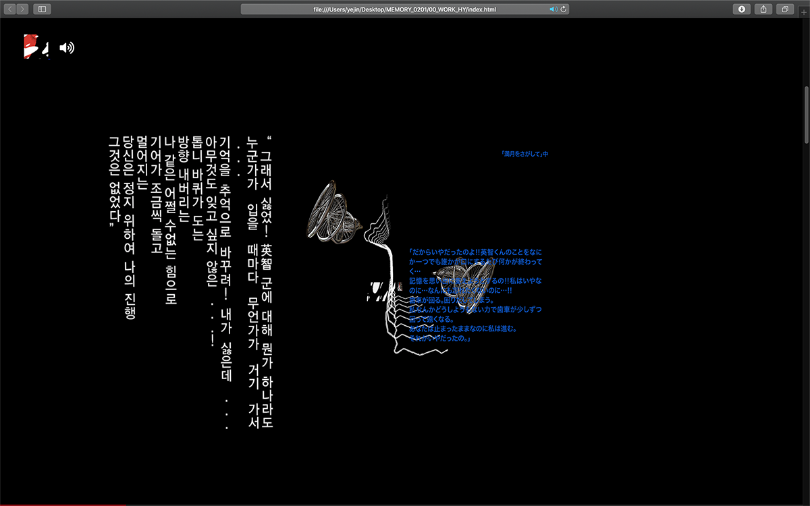


 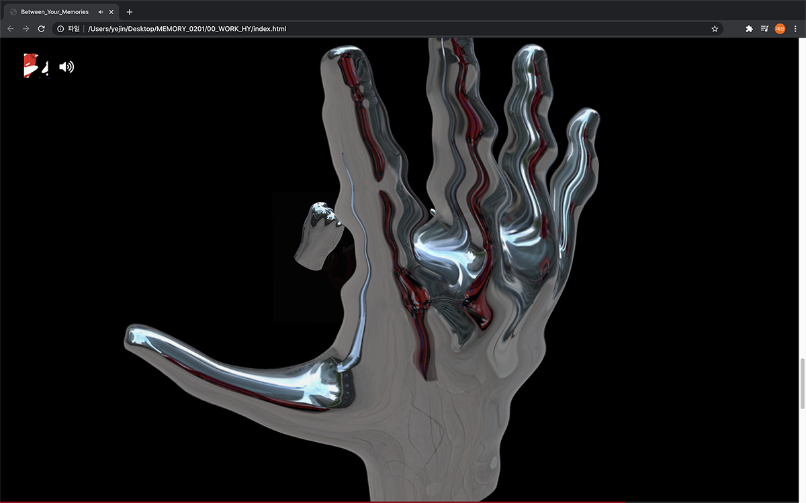
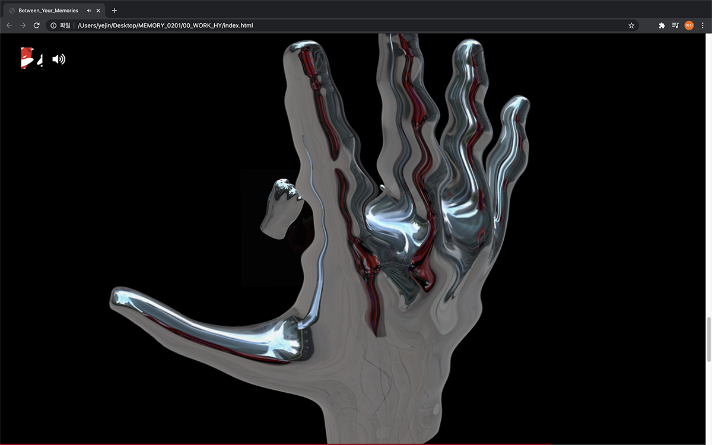
 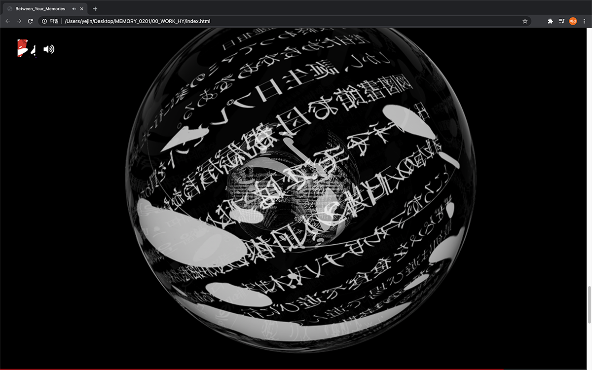
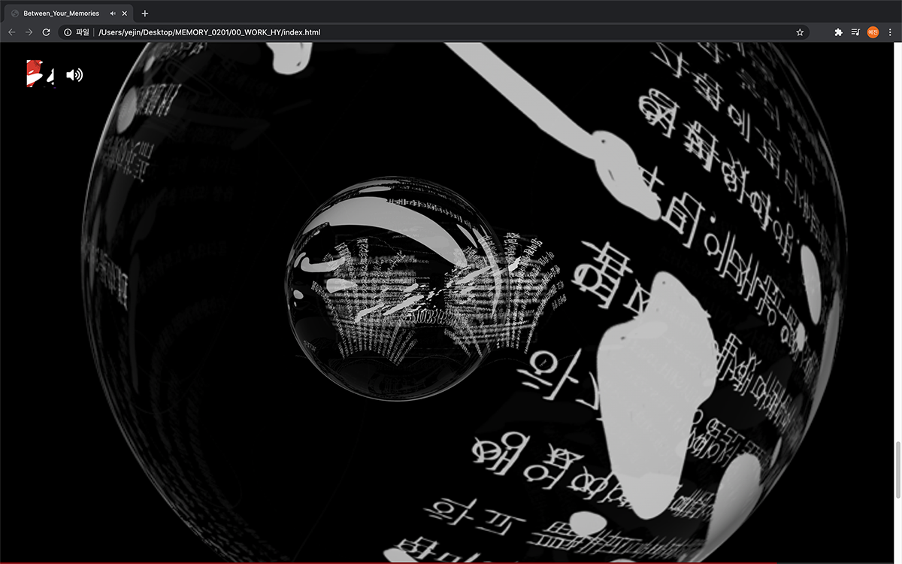
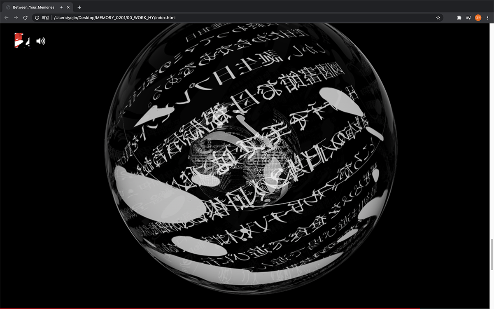
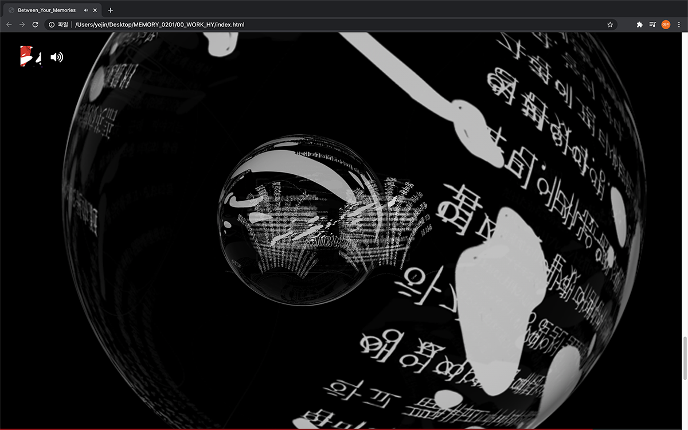

 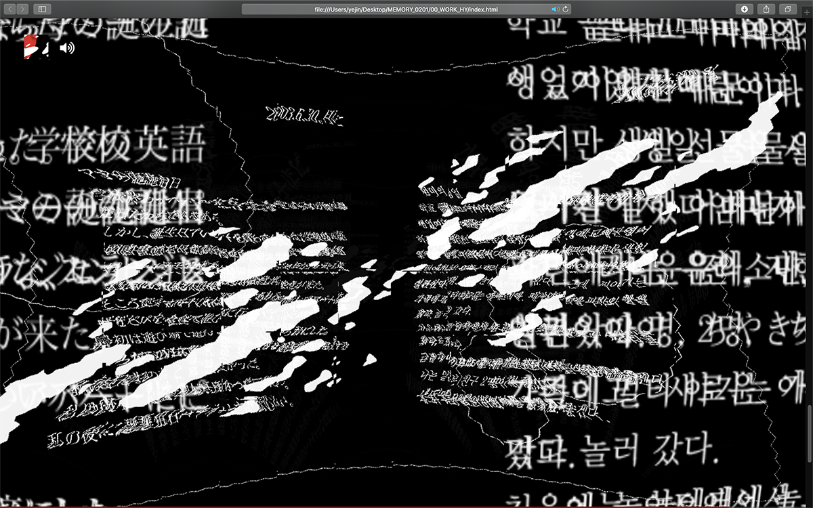
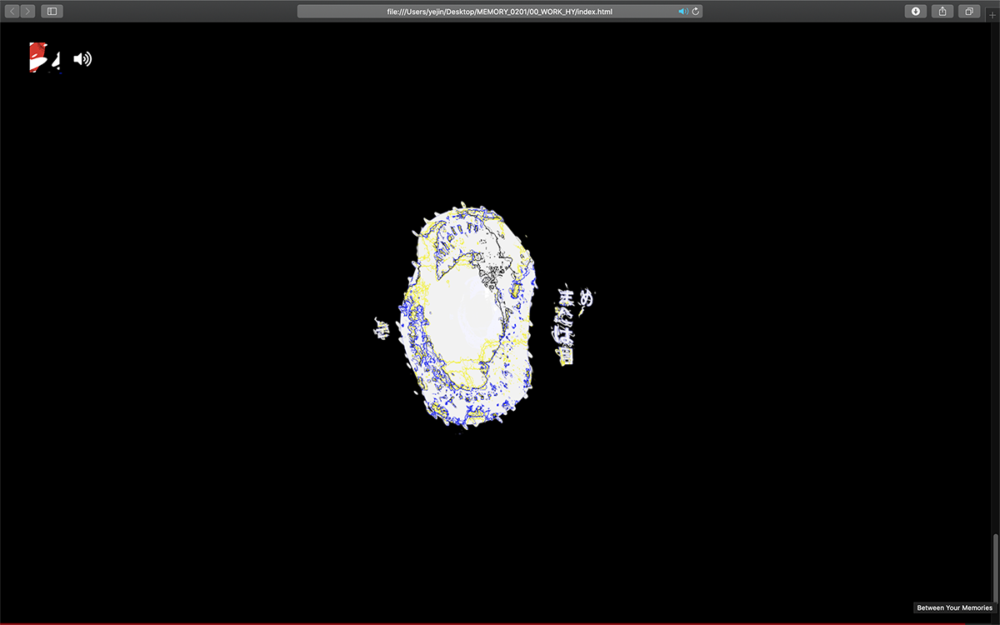
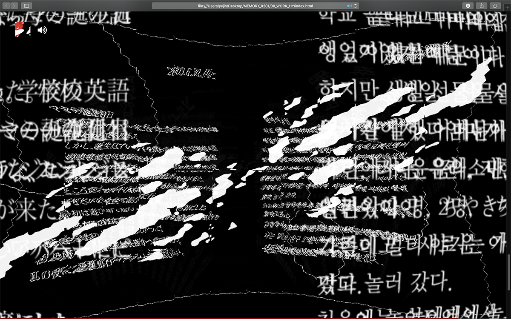
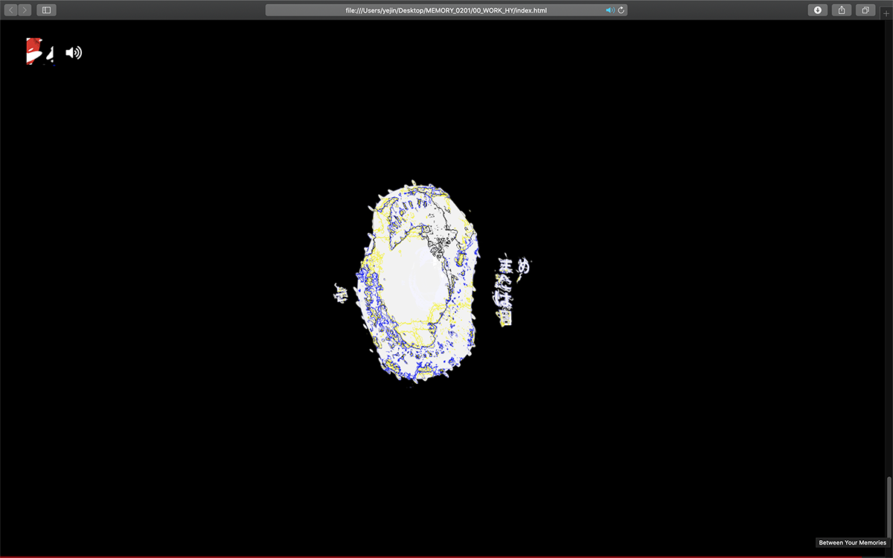


 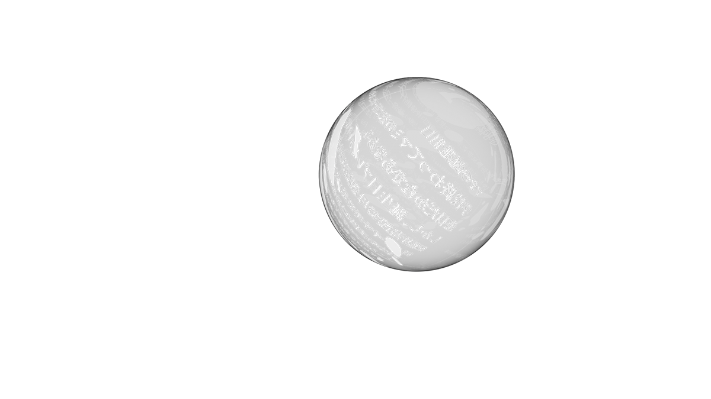
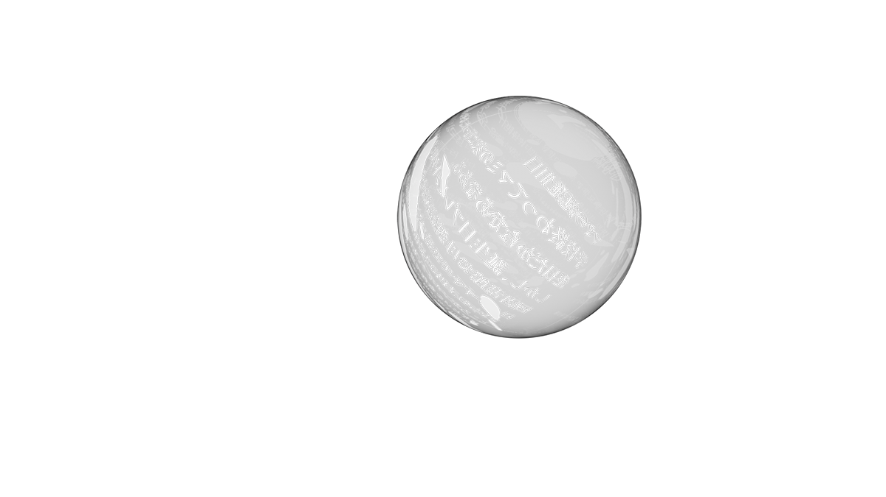